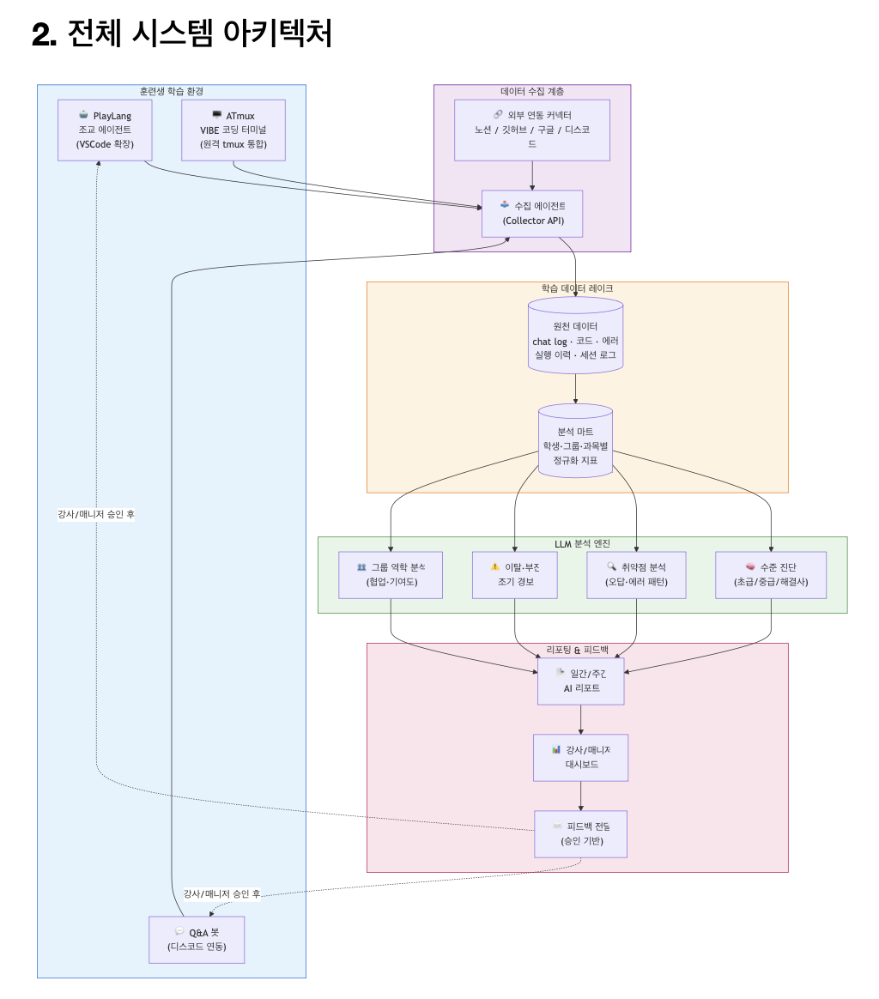

08.07 회의 자료
학습관리(LMS)와 역량 증명서 발급·외부 검증을 하나로 묶은 플랫폼입니다.
기능의 대부분은 이미 실제 서버에 연결되어 배포 환경에서 동작합니다.
남은 작업은 증명서 발급 폐쇄 루프입니다.
남은 작업을 8월 31일 안에 끝내기 위한 현황·구조·일정·결정 사항을 작성했습니다.
LMS 기능 개발은 대부분 끝났고, 지금은 완성된 화면의 UI/UX 개선과 QA를 진행하고 있습니다.
전체 화면 146개 중 134개가 실제 백엔드에 연결되어
배포 환경에서 동작합니다.
남은 12개 화면 중 5개가
역량 증명서이고,
나머지 7개는 7월에 2차로 이월하기로 결정한 PLAY(수강생이 플레이하는 학습 게임) 화면입니다.
역량 증명서는 발급 요청·검토·승인·공개·외부 검증까지 이어지는 뼈대가 8월 7일 자로 연결됐습니다.
남은 것은 그 안을 채우는 증명서 본문 데이터 조회와 역량 점수·AI 분석이며,
점수 산정 기준이 확정되고 분석 서버(LMS-AI)가 배포되어야 완결됩니다.
실연동 화면
134/146
7월 6일 78/141 · 8월 5일 131
백엔드 API
442개
7월 6일 216개 · +105%
자동 테스트
814/817
실패 3건 — 증명서 AI 점수 조회 (오늘 실행)
배포 환경
정상
웹·API 응답 확인
잔여 마감일
25일
08-06 ~ 08-31
라우트(화면 주소) 단위로 실제 API 연결 여부를 확인한 결과입니다. 미완성 파트는 화면은 완성됐으나 데이터가 아직 임시(mock)이거나 메뉴에서 차단된 상태입니다.
프론트엔드 · 백엔드 · 인프라 저장소를 대조해 대 · 중 · 소분류로 정리했습니다.
전체 112개 항목 중 93개가 완료입니다.
남은 19개는 Data Pipeline 11건(원천 수집 · 전처리 · 분석),
역량 증명서 3건(본문 조회 · 스냅샷 · 감사 로그),
인프라 2건(integration 서비스 · 오토스케일),
그리고 2차 이월된 PLAY 3건이며,
각 항목의 후속 조치는 아래 표에 적었습니다.
| 대분류 | 중분류 | 소분류 | 완료 여부 | 후속 조치 |
|---|---|---|---|---|
| 계정 · 권한 | 인증 | 로그인 · 로그아웃 | 완료 | |
| JWT 발급 · 검증 | 완료 | |||
| 역할별 접근 제어(5종) | 완료 | |||
| 계정 | 사용자 · 역할 관리 | 완료 | ||
| 임시 비밀번호 발급 | 완료 | |||
| 수강생 온보딩 | 완료 | |||
| 프로필 | 역할별 프로필 조회 · 수정 | 완료 | ||
| GitHub 계정 연결 | 완료 | |||
| 수강생 학습 | 과정 | 대시보드 | 완료 | |
| 공지 목록 · 상세 | 완료 | |||
| 강의 자료실 | 완료 | |||
| 출결 | 출결 현황 조회 | 완료 | ||
| 출결 폼 제출 | 완료 | |||
| 첨부 파일 조회 | 완료 | |||
| 평가 | 퀴즈 응시 | 완료 | ||
| 퀴즈 결과 확인 | 완료 | |||
| 과제 제출 | 완료 | |||
| 기록 | 블로그 기록 | 완료 | ||
| 스터디 기록 | 완료 | |||
| 자격증 기록 | 완료 | |||
| 보완 요청 대응 | 완료 | |||
| 프로젝트 | 프로젝트 등록 · 상세 | 완료 | ||
| GitHub 저장소 연동 | 완료 | |||
| 팀원 상호평가 | 완료 | |||
| 변경 요청 | 완료 | |||
| 공유 | 트러블슈팅 작성 · 상세 | 완료 | ||
| QnA 작성 · 답변 확인 | 완료 | |||
| 취업 준비 | 이력서 작성 · 수정 | 완료 | ||
| 멘토링 신청 · 조회 | 완료 | |||
| 마일리지 | 상점 · 장바구니 | 완료 | ||
| 구매 요청 | 완료 | |||
| 적립 · 사용 내역 | 완료 | |||
| PLAY | 타자 게임 | 부분 | 화면 완성 · 백엔드 미착수 — 7월 6일 2차 이월 | |
| 코딩 게임 | 부분 | 화면 완성 · 백엔드 미착수 — 7월 6일 2차 이월 | ||
| 퀴즈 게임 | 부분 | 화면 완성 · 백엔드 미착수 — 7월 6일 2차 이월 | ||
| 강사 | 기수 운영 | 담당 기수 대시보드 | 완료 | |
| 기수별 교육 현황 | 완료 | |||
| 공지 작성 · 수정 | 완료 | |||
| 출제 · 채점 | 퀴즈 출제 · 수정 | 완료 | ||
| 퀴즈 템플릿 · 문항 관리 | 완료 | |||
| 퀴즈 제출물 채점 | 완료 | |||
| 과제 출제 · 제출물 관리 | 완료 | |||
| 심사 | 프로젝트 인증 심사 | 완료 | ||
| 트러블슈팅 인증 심사 | 완료 | |||
| 학습 기록 검토 | 완료 | |||
| 인증 후 변경 요청 처리 | 완료 | |||
| 추천 | 추천서 작성 | 완료 | ||
| 추천서 이력 조회 | 완료 | |||
| 멘토 | 팀 관리 | 배정 팀 · 멘티 조회 | 완료 | |
| 멘티 상세 확인 | 완료 | |||
| 멘토링 | 예약 요청 응답 | 완료 | ||
| 멘토링 일지 작성 · 제출 | 완료 | |||
| 평가 | 팀원 역량 평가(4축) | 완료 | ||
| 추천서 작성 | 완료 | |||
| 운영(매니저) | 현황 | 통합 대시보드(HRD 단일 소스) | 완료 | |
| 수강생 활동 조회 | 완료 | |||
| 학생 목록 · 상세 | 완료 | |||
| 교육 운영 | 과정 · 기수 개설 | 완료 | ||
| 커리큘럼 관리 | 완료 | |||
| 공지 · 자료 관리 | 완료 | |||
| 과제 · 퀴즈 관리 | 완료 | |||
| 검토 | 학습 기록 승인 · 보완요청 | 완료 | ||
| QnA 관리 | 완료 | |||
| 수강생 평가 | 완료 | |||
| 마일리지 | 직접 지급 | 완료 | ||
| 상품 관리 | 완료 | |||
| 구매 요청 처리 | 완료 | |||
| 유형별 한도 설정 | 완료 | |||
| 멘토링 | 멘토 배정 | 완료 | ||
| 일지 · 템플릿 관리 | 완료 | |||
| 멘토링 통계 | 완료 | |||
| 기타 | 평판 관리 | 완료 | ||
| PLAY 타자 텍스트 관리 | 완료 | |||
| HRD API 키 설정 | 완료 | |||
| 역량 증명서 | 발급 요청 | 증명서 상태 조회 | 완료 | |
| 정식 인증 요청 | 완료 | |||
| 검토 · 승인 | 검토 큐 조회 | 완료 | ||
| 데이터 준비 완료 전이 | 완료 | |||
| 검토 · 보완 요청 | 완료 | |||
| 인증 완료 처리 | 완료 | |||
| 열람 · 공개 | 증명서 본문 조회 | 미구현 | GET /student/certificate 신설 — 지금은 화면이 임시 데이터로 렌더된다 | |
| 공개 설정 | 완료 | |||
| 외부 검증 링크 | 완료 | |||
| 증적 | 승인 시점 내용 동결(스냅샷) | 미구현 | S3 객체 버전 ID를 증명서에 고정하는 API 신설 — 화면은 완성 | |
| 발급 감사 로그 | 미구현 | 이력 조회 API 신설 — 화면(/audit)은 완성 | ||
| Data Pipeline | ① 원천 수집 | 수료 익일 00:00 배치 실행 | 미구현 | 서비스당 태스크 1개라 Spring @Scheduled 로 충분. 오토스케일(V2) 도입 시 분산 락 필요 |
| 학습 · 평가 데이터 추출 | 미구현 | DB · 로그에서 수강생 단위로 모아 원천 스냅샷 생성 | ||
| S3 원천 적재 | 미구현 | BE 에 AWS SDK 사용처가 없어 S3 연동부터 필요 — 개인정보 보존 기한 · 파기 정책도 함께 정한다 | ||
| ② 전처리 | 증명서 표시 항목만 가공 | 미구현 | 원천에서 증명서에 실제로 노출할 필드만 추린다 | |
| 파티션 저장 | 미구현 | cohort=NN/student_uuid=…/영역 (종합요약 · 기술검증 · 프로젝트 …) 규칙으로 적재 | ||
| 저장 형식 확정 | 미구현 | 학생당 수 KB 개별 조회가 주 패턴이라 JSON 이 무난. Athena · Glue 집계를 전제할 때만 Parquet | ||
| ③ 분석 | 역량 점수 산출 | 미구현 | 확정 함수(LLM 아님)로 계산 — 재실행해도 같은 값이 나와야 승인 내용이 재현된다 | |
| AI 서술 생성 | 미구현 | OpenAI 호출. 모델 · 프롬프트 버전을 메타로 함께 저장 | ||
| 분석 결과 적재 | 미구현 | 같은 파티션 아래 scores · ai 로 분리 저장 | ||
| LMS-AI 서버 배포 | 미구현 | Terraform 에 ECS 서비스 추가 — 현재 로컬 실행만 가능하며 이 파이프라인 전체의 선행 조건 | ||
| ④ 상태 전이 | 학생 단위 준비 완료 처리 | 완료 | ||
| 실패 재시도 · 부분 진행 | 미구현 | 한 명의 실패가 기수 전체를 막지 않도록 학생 단위 상태 · 재시도 경로가 필요하다 | ||
| 인프라 (Terraform) | 네트워크 | VPC · 서브넷(2 AZ) | 완료 | |
| ALB 경로 라우팅 | 완료 | |||
| CloudFront HTTPS 종단 | 완료 | |||
| 실행 | ECS 클러스터 · auth | 완료 | ||
| learning | 완료 | |||
| operations | 완료 | |||
| integration | 미구현 | 외부 연동 착수 시 기동 — 지금은 골격만 있고 실행 태스크 0 | ||
| 오토스케일 | 미구현 | V2 — Container Insights 에서 CPU · 메모리 75% 초과가 지속되면 적용 | ||
| 데이터 | RDS PostgreSQL ×4 | 완료 | ||
| ElastiCache Redis | 완료 | |||
| S3 버킷 | 완료 | |||
| 운영 | Secrets Manager | 완료 | ||
| ECR · CloudWatch | 완료 | |||
| CloudTrail 감사 | 완료 | |||
| CI/CD (GitHub OIDC) | 완료 |
| 역할 | 지금 할 수 있는 것 |
|---|---|
| 수강생 |
|
| 매니저 |
|
| 강사 |
|
| 멘토 |
|
| 저장소 | 역할 | 커밋 | 최신 PR | 품질 확인 |
|---|---|---|---|---|
| LMS-FE | 웹 화면 전체 (React) | 3,601 | #832 | 타입검사 통과 · 테스트 814/817 통과 (증명서 AI 점수 3건 실패) |
| LMS-BE | API 서버 4종 (Spring Boot) | 1,565 | #582 | 전 서비스 컴파일 통과 · 개발↔운영 브랜치 동기 |
| LMS-AI | 증명서 점수·분석 엔진 (Python) | 96 | #47 | 테스트 파일 16개 |
| LMS-TERRAFORM | AWS 인프라 코드 | 17 | #3 | 모듈 9종 |
| LMS-DOCS | 설계·결정 문서 | 650 | #207 | 보고서 100여 건 누적 |
8월 21일까지 Data Pipeline과 증명서 잔여 구현을 끝내고,
8월 22일부터 말일까지는 실데이터 검증과 전체 QA에 씁니다.
| 구간 | 할 일 | 담당 |
|---|---|---|
| ~ 8/21 12영업일 |
Data Pipeline 구축 11건
수료 익일 00:00 배치로 원천 데이터를 S3에 적재하고, 증명서에 쓸 항목만 전처리해 cohort=NN/student_uuid=… 규칙으로 저장한 뒤,
역량 점수(확정 함수)와 AI 서술을 만들어 같은 파티션에 넣습니다.
LMS-AI의 AWS 배포가 선행 조건이며, BE에 S3 연동이 없어 그 작업부터 시작합니다
|
이정훈 · 박준석 |
| ~ 8/21 |
역량 증명서 잔여 구현 3건 —
인증 요청·검토·승인·공개 흐름은 08-07 자로 연결됐습니다. 남은 것은 증명서 본문 데이터 조회, 승인 시 내용 동결(스냅샷), 발급 감사 로그입니다 |
황설현 |
| ~ 8/21 |
잔여 개선
공통 안내 화면(권한 오류·세션 만료·비밀번호 재설정), 임시 비밀번호 변경 경로, 세션 유지 결함 |
황설현 · 이정훈 |
| 8/22 ~ 8/31 6영업일 |
증명서 실데이터 검증 + 전체 QA
합성 데이터를 실제 학습 데이터로 교체하고 점수·등급 재검증, 역할별 시나리오 점검, 결함 수정 |
전원 |
| 선택 |
PLAY 미니게임 3종(타자·코딩·퀴즈, 7화면)
7월 6일 2차 이월로 결정된 범위. 위 구간이 일정대로 끝나 여유가 생길 때만 착수 |
— |
2026-07-08 자 「정부지원 AI 활용 교육 사업 제안서」를 검토하며 확인이 필요한 사항을 모읍니다. 답변이 정해지는 대로 각 문항에 채워 넣고, 결정으로 이어진 항목은 답변 완료로 표시합니다.
훈련생의 학습을 AI 에이전트가 상시 지원하면서 그 과정에서 나오는 백데이터를 모으고, LLM으로 분석해 강사·매니저에게 리포트를 주고, 그 리포트를 근거로 다시 훈련생에게 피드백이 나가는 폐쇄 루프를 만드는 사업입니다.
| 항목 | 제안서 내용 |
|---|---|
| 기간 | 총 3개월 — 1개월 단위 3단계 (로드맵 기준 08/02 착수) |
| 대상 | 6개월 교육 과정 훈련생 A·B·C 그룹 및 교육 관계자 전원 |
| 산출물 |
① 학습 지원 AI 에이전트군(PlayLang·ATmux·Q&A 봇) ② 학습 데이터 수집 파이프라인 ③ LLM 분석·리포팅 엔진 ④ 강사/매니저 대시보드 및 피드백 시스템 |
| 단계 | 1단계 에이전트·수집 기반 → 2단계 LLM 분석·AI 리포팅 → 3단계 피드백 루프 완성 및 전 그룹 확대 |
| 기술 | Python 3.12+ (uv · FastAPI · PostgreSQL), TypeScript (VSCode 확장 · 웹 UI), Docker + docker-compose, LLM API (Claude 등) |
| 원칙 | Human-in-the-Loop — AI가 피드백 초안을 만들되 평가성 판단은 반드시 강사·매니저 승인을 거쳐 전달 |
